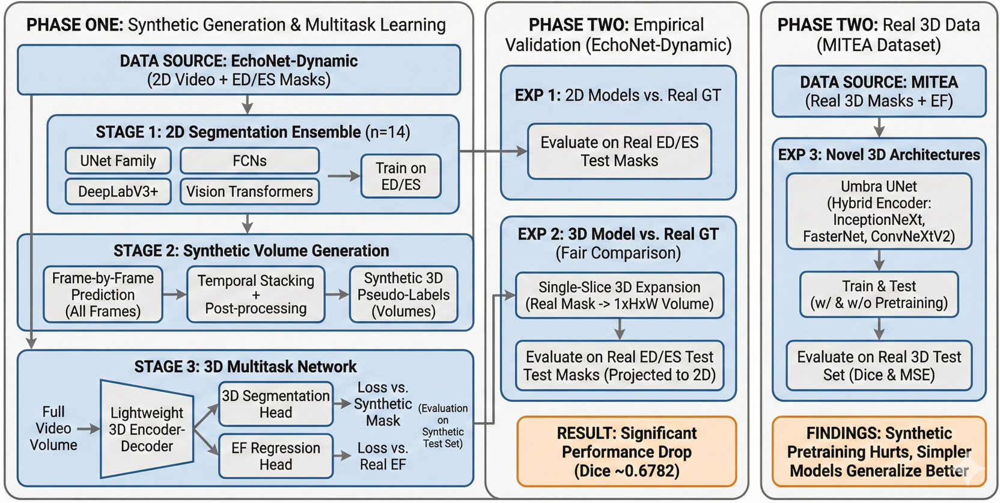
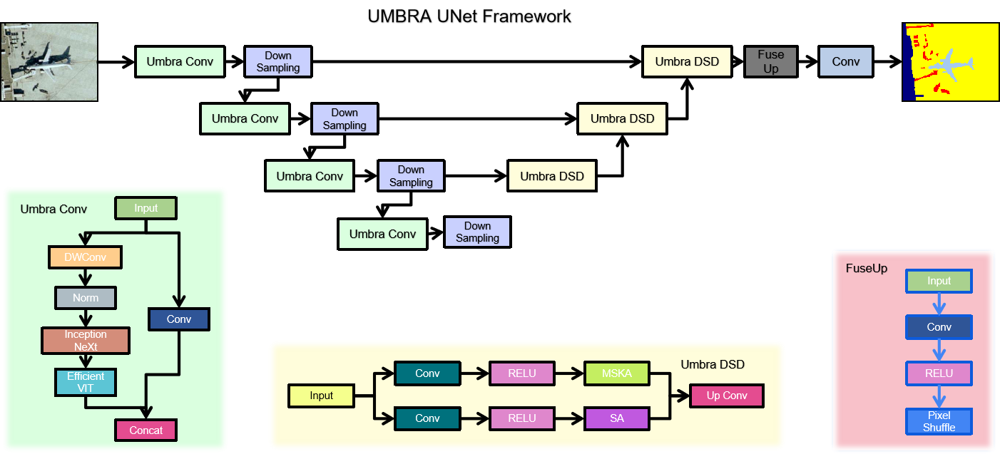

Abstract
Automated analysis of the left ventricle (LV) from echocardiography, encompassing both segmentation and ejection fraction (EF) estimation, is a clinically important but technically challenging problem. This work presents a two-phase research program exploring the potential and limits of synthetic 3D data generation for multitask volumetric cardiac learning. In Phase One, a framework is proposed for joint 3D LV segmentation and EF estimation by leveraging synthetic volumetric data generated from an ensemble of fourteen diverse 2D segmentation models trained exclusively on end-diastolic (ED) and end-systolic (ES) frame annotations from the EchoNet-Dynamic dataset. A lightweight 3D multitask network with a shared encoder achieved a maximum Dice score of 0.9701 and a minimum EF MSE of 163.9, with only 1,183,682 parameters and a model size of 4.73 MB, orders of magnitude more compact than DeepLabResNet101 (233 MB) or ViT-L-16 (1183 MB). In Phase Two, these results are critically re-examined through controlled experiments anchored to real ground truth. The 3D model evaluated on real 2D ground-truth masks achieves a Dice of only 0.6782, substantially below 2D baselines (up to 0.8932), exposing a fundamental performance ceiling imposed by synthetic label training. Further experiments on the real-world 3D MITEA dataset confirm that complex models overfit on limited 3D clinical data, with the standard 3D UNet achieving the best test MSE of 85.77 at test Dice of 0.8464.
Introduction
The left ventricular ejection fraction (LVEF) is one of the most clinically consequential parameters in cardiology, used to diagnose heart failure, guide therapy, and stratify long-term patient risk. LVEF is defined as the ratio of stroke volume to end-diastolic volume, a quantity that fundamentally requires accurate LV segmentation across the cardiac cycle. Despite decades of research, automated and reliable computation of LVEF from echocardiographic video remains an open challenge due to the low signal-to-noise ratio of ultrasound images, significant inter-patient anatomical variability, and the inherent difficulty of constructing volumetric representations from 2D imaging data.
Modern deep learning has substantially advanced both segmentation and regression in isolation. Fully convolutional networks, attention-based U-Nets, and Vision Transformers have brought 2D segmentation Dice scores above 0.93 on well-annotated datasets such as EchoNet-Dynamic. Concurrently, end-to-end video regression models have reduced EF mean absolute error (MAE) to below 4%. However, the integration of precise volumetric segmentation with functional regression in a unified 3D framework, and rigorous evaluation against ground-truth baselines, remains comparatively underexplored.
A core practical barrier is the scarcity of 3D echocardiographic annotations. While datasets such as EchoNet-Dynamic provide 2D apical four-chamber video with sparse ED/ES masks, fully annotated 3D volumetric data is far rarer and more costly to acquire. One natural strategy is to use trained 2D models to generate dense synthetic 3D supervision by predicting masks for every frame and stacking them temporally. However, the faithfulness of such synthetic labels relative to true clinical annotations, and the degree to which a 3D model trained on them can generalize, are empirical questions that prior literature has not directly addressed.
This paper presents a rigorous two-phase investigation of this strategy. Phase One develops and evaluates a lightweight 3D multitask framework trained entirely on synthetic volumes derived from an ensemble of fourteen 2D segmentation architectures, demonstrating high performance on within-distribution (synthetic) evaluation. Phase Two then systematically interrogates the validity and limits of those results through three controlled experiments: (1) full test-set evaluation of all 2D generators against real ground-truth labels; (2) direct evaluation of the 3D model on real 2D ground-truth masks to enable an unbiased comparison; and (3) experiments on the genuine 3D MITEA dataset to assess how well various architectures generalize when trained on authentic volumetric annotations.
Main Contributions
- A comprehensive benchmark of fourteen 2D segmentation models on EchoNet-Dynamic, covering U-Net variants, FCN backbones, DeepLabV3+ configurations, and Vision Transformers.
- A lightweight 3D multitask architecture (1.18M parameters, 4.73 MB) substantially more compact and faster than all 2D counterparts.
- Methodologically rigorous Phase Two establishing: the 3D model's Phase One accuracy is bounded by synthetic label quality; on real ground truth the 3D model (Dice 0.6782) is outperformed by leading 2D models (Dice up to 0.8932); on the real 3D MITEA dataset, model complexity must be carefully controlled to avoid overfitting.
- Umbra UNet, a novel hybrid 3D encoder-decoder integrating InceptionNeXt, FasterNet, and ConvNeXtV2 blocks, evaluated for the first time on 3D echocardiographic LV segmentation.
- Clear articulation of the synthetic-to-real domain gap and the conflation problem of jointly learning segmentation alongside a derived metric (EF).
Phase One: Synthetic Volume Generation and 3D Multitask Learning
Dataset: EchoNet-Dynamic
All Phase One experiments use EchoNet-Dynamic, a large-scale public echocardiography benchmark released by Stanford University comprising 10,030 apical four-chamber video clips. Each video is annotated with a single LVEF value and binary LV segmentation masks at the ED and ES frames. The official train/validation/test split (7465 / 1288 / 1277 videos) is followed. All frames are resized to 224×224 pixels and normalized to [0, 1].
Stage 1: Training the 2D Segmentation Ensemble
Fourteen 2D segmentation architectures are trained exclusively on ED/ES frame pairs from EchoNet-Dynamic. The ensemble spans four architectural families: the U-Net family (UNet, UNet++, R2U-Net, R2AttU-Net, Double U-Net, U²-Net, and AttU-Net); Fully Convolutional Networks (FCN-ResNet50 and FCN-ResNet101); DeepLabV3+ with three backbones (MobileNetV3-Large, ResNet50, and ResNet101); and Vision Transformer segmenters (ViT-B-16 and ViT-L-16).
Each model minimizes a combined binary cross-entropy and Dice loss on predicted versus ground-truth binary masks. All models are optimized with Adam (learning rate 1×10⁻⁴, weight decay 1×10⁻⁵) for 100 epochs, selecting the best checkpoint by validation Dice.
Stage 2: Synthetic 3D Volume Generation
Each trained 2D model is applied frame-by-frame to every training video to produce a sequence of binary masks stacked temporally into a synthetic volume. To enforce spatiotemporal continuity: morphological closing (disk kernel, radius 3) is applied slice-by-slice to fill intra-mask holes, and connected components with fewer than 50 pixels are removed as isolated artifacts. This generates fourteen distinct synthetic volume sets, one per 2D generator, each approximating the complete volumetric anatomy of the LV across the cardiac cycle from only two annotated frames.
Stage 3: 3D Multitask Network Architecture
The 3D multitask network takes a full video volume as input and simultaneously predicts a binary segmentation mask volume and a scalar EF value. The architecture has three components. A shared 3D encoder, a lightweight 3D convolutional backbone inspired by ResNet50, modified for single-channel volumetric inputs, produces a hierarchy of spatiotemporal feature maps across four resolution levels via strided 3D convolutions with batch normalization and ReLU. A segmentation decoder reconstructs the full-resolution 3D mask via transposed convolutions and skip connections. An EF regression head applies global average pooling at the bottleneck followed by two fully connected layers (512→128→1) with dropout (p=0.3).
Training minimizes a joint loss with equal weighting: the sum of binary cross-entropy and Dice loss for segmentation plus MSE for EF regression, where the segmentation target is the synthetic volume from the respective 2D generator and the EF target is the ground-truth EF from EchoNet-Dynamic.

Important Note on Phase One Evaluation
The 3D models are trained on synthetic volumes (pseudo-labels produced by the 2D generators) and are also evaluated by comparing predictions against those same synthetic volumes on the held-out test set. The Dice scores reported in Phase One therefore measure how well the 3D model reproduces the style of its specific 2D generator, they do not directly measure agreement with human-annotated ground truth. The rigorous ground-truth comparison is presented in Phase Two.
Phase One: Results and Analysis
Model Efficiency Comparison
Table 1 contextualizes the computational footprint of all models. The proposed 3D multitask model is dramatically more compact and faster than every 2D model in the ensemble, over 26× fewer parameters than the lightest 2D model (DeepLabV3+ MobileNetV3-L, 11M) and over 260× fewer than ViT-L-16. Its inference time of 0.6156 s is 3.4× faster than FCN-ResNet50 (1.87 s) and 11× faster than ViT-L-16 (6.79 s).
| Model | Parameters | Size (MB) | Inference (s) |
|---|---|---|---|
| DeepLabV3+ ResNet50 | 41,998,934 | 160.43 | 2.0907 |
| DeepLabV3+ ResNet101 | 60,991,062 | 233.08 | 3.9142 |
| DeepLabV3+ MobileNetV3-L | 11,024,188 | 42.16 | 2.1450 |
| FCN-ResNet50 | 35,311,958 | 134.91 | 1.8698 |
| FCN-ResNet101 | 54,304,086 | 207.56 | 3.4331 |
| UNet | 34,527,041 | 131.76 | 2.0870 |
| UNet++ | 36,629,633 | 139.79 | 4.4062 |
| U²-Net | 44,009,869 | 168.00 | 5.4076 |
| Double UNet | 29,288,886 | 111.76 | 2.8303 |
| R2U-Net | 39,091,393 | 149.17 | 5.5711 |
| AttU-Net | 34,878,573 | 133.11 | 2.3156 |
| R2AttU-Net | 39,442,925 | 150.52 | 5.7607 |
| ViT-B-16 | 91,560,145 | 349.29 | 2.9406 |
| ViT-L-16 | 310,204,625 | 1183.35 | 6.7873 |
| Proposed 3D Multitask Model | 1,183,682 | 4.73 | 0.6156 |
2D Segmentation Model Performance
Table 2 summarizes train and validation Dice scores for all fourteen 2D segmentation models on EchoNet-Dynamic ED/ES frames. These results establish the quality of the synthetic labels generated in Stage 2. The UNet family consistently leads in validation performance, with UNet achieving the best validation Dice (0.9272). Attention-based recurrent variants exhibit high training scores (0.98+) but show evidence of overfitting, R2AttU-Net's validation Dice drops to 0.7543. Vision Transformer models are competitive (validation ≈ 0.9069) but consistently trail the best CNNs.
| Model | Train Dice | Validation Dice |
|---|---|---|
| DeepLabV3+ MobileNetV3-L | 0.8978 | 0.8941 |
| DeepLabV3+ ResNet50 | 0.9155 | 0.9132 |
| DeepLabV3+ ResNet101 | 0.9193 | 0.9174 |
| FCN-ResNet50 | 0.9171 | 0.9173 |
| FCN-ResNet101 | 0.9193 | 0.9174 |
| UNet | 0.9514 | 0.9272 |
| UNet++ | 0.9585 | 0.9254 |
| U²-Net | 0.9329 | 0.9002 |
| AttU-Net | 0.9841 | 0.9268 |
| Double UNet | 0.9481 | 0.9216 |
| R2AttU-Net | 0.9822 | 0.7543 |
| R2U-Net | 0.9822 | 0.9152 |
| ViT-B-16 | 0.9186 | 0.9069 |
| ViT-L-16 | 0.9124 | 0.9055 |
3D Multitask Model Performance on Synthetic Data
Table 3 reports test Dice scores and EF MSE for the fourteen 3D multitask models, each trained and evaluated on synthetic volumes from its respective 2D generator. FCN-ResNet50 as generator yields the highest test Dice (0.9701), while Double UNet achieves the lowest EF MSE (163.93) with a near-identical Dice (0.9698), representing the Pareto-optimal frontier. Transformer-based generators consistently produce lower Dice (≈0.946) and higher EF MSE (≈170–176), indicating ViT models trained solely on sparse ED/ES annotations do not generalize well to mid-cycle frames. Deeper CNN backbones outperform lighter counterparts in Dice, but EF error differences remain narrow (165–168 range), suggesting EF regression is relatively robust to generator choice as long as the generator is CNN-based.
| Synthetic Generator | Test Dice | Test EF MSE |
|---|---|---|
| FCN-ResNet50 | 0.9701 | 165.78 |
| Double UNet | 0.9698 | 163.93 |
| FCN-ResNet101 | 0.9692 | 167.83 |
| UNet | 0.9672 | 166.36 |
| DeepLabV3+ ResNet101 | 0.9666 | 166.74 |
| AttU-Net | 0.9633 | 168.63 |
| DeepLabV3+ ResNet50 | 0.9626 | 167.21 |
| UNet++ | 0.9618 | 167.07 |
| R2U-Net | 0.9610 | 175.07 |
| R2AttU-Net | 0.9608 | 169.43 |
| ViT-L-16 | 0.9465 | 176.41 |
| DeepLabV3+ MobileNetV3-L | 0.9462 | 169.24 |
| ViT-B-16 | 0.9455 | 170.12 |
| U²-Net | 0.9297 | 164.75 |
Phase Two: Empirical Validation and Methodological Refinements
Experiment 1: 2D Model Test Performance on Real Ground Truth
Phase One reported only train and validation Dice scores. To establish a fair reference point, all fourteen 2D segmentation models were evaluated on the official EchoNet-Dynamic test set against human-annotated ED/ES masks. Table 4 presents the complete results.
Several important patterns emerge. A systematic drop from validation to test Dice is observed across all models. R2AttU-Net, despite its poor validation Dice (0.7543), achieves the best test Dice (0.8932), a reversal explained by the attention-gated recurrent structure's expressive recovery beyond the specific validation split. R2U-Net closely follows at 0.8890. The U²-Net test Dice (0.7300) is notably lower than its validation score (0.9002), indicating overfitting. Vision Transformer models suffer a catastrophic drop: ViT-B-16 drops from 0.9069 to 0.5867, and ViT-L-16 from 0.9055 to 0.6422, suggesting pure transformer architectures are ill-suited for LV segmentation under the limited-label (ED/ES only) regime.
| Model | Train Dice | Val Dice | Test Dice |
|---|---|---|---|
| DeepLabV3+ MobileNetV3-L | 0.8978 | 0.8941 | 0.8045 |
| DeepLabV3+ ResNet50 | 0.9155 | 0.9132 | 0.8253 |
| DeepLabV3+ ResNet101 | 0.9193 | 0.9174 | 0.8624 |
| FCN-ResNet50 | 0.9171 | 0.9173 | 0.8514 |
| FCN-ResNet101 | 0.9193 | 0.9174 | 0.8624 |
| UNet | 0.9514 | 0.9272 | 0.8511 |
| UNet++ | 0.9585 | 0.9254 | 0.8654 |
| U²-Net | 0.9329 | 0.9002 | 0.7300 |
| AttU-Net | 0.9841 | 0.9268 | 0.8867 |
| Double UNet | 0.9481 | 0.9216 | 0.8398 |
| R2AttU-Net | 0.9822 | 0.7543 | 0.8932 |
| R2U-Net | 0.9822 | 0.9152 | 0.8890 |
| ViT-B-16 | 0.9186 | 0.9069 | 0.5867 |
| ViT-L-16 | 0.9124 | 0.9055 | 0.6422 |
Experiment 2: Fair Comparison of the 3D Model Against Real Ground Truth
The Phase One 3D model was assessed against synthetic labels it was trained to reproduce, not a fair comparison to the 2D models evaluated against human annotations. To construct a fair comparison, the best-performing 3D multitask model was evaluated on the original 2D ground-truth masks from EchoNet-Dynamic. Since the 3D network requires volumetric input, each 2D ground-truth mask was expanded with a singleton temporal dimension into a 1×224×224 volume; the model's predicted 3D mask was then projected back to 2D and compared using the Dice coefficient.
Result: Test Dice of 0.6782 on Real Ground Truth
The 3D model, which appeared highly competitive in Phase One (Dice up to 0.9701), is in fact substantially weaker than its own generators when judged against human annotations. It falls below every CNN-based 2D model and is comparable only to the worst-performing ViT models (ViT-B-16: 0.5867, ViT-L-16: 0.6422).
This result demonstrates a fundamental performance ceiling effect. The 3D model's training labels are themselves the predictions of a 2D model, predictions that contain that model's specific errors and biases. The 3D model learns to reproduce those imperfect predictions, and its accuracy is therefore bounded above by the fidelity of its synthetic labels. In practice, the 3D model performs worse than this bound suggests, because it additionally suffers from the domain mismatch between smooth, model-biased synthetic masks and irregular human-annotated contours.
This finding also reveals a conceptual weakness in the joint learning objective. EF is a derived clinical metric computed from the volumetric ratio of end-diastolic to end-systolic LV volumes. Asking the network to simultaneously regress EF while learning segmentation from pseudo-labels creates a circular learning signal, the EF target is computed from ground-truth anatomy, but the segmentation target is synthetic and may not accurately encode that anatomy. This conflation hampers both tasks and suggests that EF should be treated as a post-processing output derived deterministically from the predicted segmentation volume, rather than as an independent regression target during training.
Experiment 3: Transition to Real 3D Data with the MITEA Dataset
To entirely bypass the synthetic data bottleneck, experiments were extended to MITEA, a real-world 3D transesophageal echocardiography (3D TEE) dataset providing genuine volumetric annotations of the LV with voxel-level ground-truth segmentation and associated clinical measurements including EF.
Umbra UNet: A Novel Hybrid 3D Architecture

Motivated by the limitations of the simple Phase One architecture, Umbra UNet is a hybrid 3D encoder-decoder integrating multiple modern lightweight vision blocks within a U-Net-style skeleton. The multi-branch parallel encoder employs three modern vision modules: InceptionNeXt blocks using decomposed depth-wise convolutions with multi-kernel branches to capture multi-scale local texture efficiently; FasterNet blocks using a partial convolution strategy that applies convolutions only to a subset of feature channels, dramatically reducing computational cost; and ConvNeXtV2 blocks with depthwise convolutions, global response normalization, and inverted bottleneck design. Features from all branches are fused via channel concatenation and a 1×1×1 projection convolution at each encoder level. A symmetric transposed-convolution decoder with skip connections reconstructs the full-resolution 3D segmentation mask, and the EF regression head remains at the bottleneck.
Comparative Evaluation on MITEA
| Model | Train Dice | Train MSE | Val Dice | Val MSE | Test Dice | Test MSE |
|---|---|---|---|---|---|---|
| Proposed 3D Model (random init.) | 0.8846 | 374.18 | 0.8747 | 81.02 | 0.8540 | 141.58 |
| Proposed 3D Model (EchoNet pretrained) | 0.9085 | 373.41 | 0.9115 | 80.95 | 0.7815 | 120.14 |
| Umbra UNet 3D (full) | 0.9387 | 59.33 | 0.9383 | 13.13 | 0.7474 | 283.71 |
| Umbra UNet 3D (FasterNet only) | 0.9327 | 58.48 | 0.9316 | 13.16 | 0.8456 | 320.58 |
| Umbra UNet 3D (InceptionNeXt only) | 0.9192 | 56.36 | 0.9219 | 12.87 | 0.8269 | 542.60 |
| Umbra UNet 3D (ConvNeXtV2 only) | 0.9441 | 71.44 | 0.9420 | 15.90 | 0.7353 | 628.34 |
| 3D UNet | 0.9327 | 446.12 | 0.9281 | 96.37 | 0.8464 | 85.77 |
Synthetic pretraining hurts generalization. The 3D model trained from random initialization achieves test Dice 0.8540, whereas the same model pretrained on EchoNet-Dynamic synthetic volumes drops to 0.7815 after fine-tuning on MITEA. The model pretrained on synthetic labels has learned features specific to the 2D-generator output style, smooth, morphologically post-processed mask boundaries, incompatible with the real 3D annotation style in MITEA. Pretraining thus serves as domain corruption rather than beneficial initialization. Interestingly, EF MSE improves slightly with pretraining (120.14 vs. 141.58), suggesting the functional regression branch transfers more readily than the segmentation branch.
Model complexity must be matched to data volume. The full Umbra UNet achieves excellent train and validation performance (Dice >0.93, Val MSE ≈13) but generalizes poorly to the test set (Dice 0.7474, MSE 283.71). By contrast, simpler architectures, the standard 3D UNet and the single-block FasterNet variant, achieve considerably better test Dice (≈0.85), confirming that on limited real 3D medical data, inductive biases constraining model capacity are more valuable than raw representational power. The ConvNeXtV2-only variant, which has the highest training Dice (0.9441), generalizes the least (test Dice 0.7353).
Segmentation and EF regression are difficult to jointly optimize. The 3D UNet achieves strong test Dice (0.8464) and the best test MSE (85.77), suggesting its conservative capacity provides implicit regularization beneficial to both tasks. However, models that achieve the best validation EF MSE (Umbra UNet InceptionNeXt: 12.87) perform poorly on test MSE (542.60), a factor of 42, indicating severe overfitting of the regression head on the limited MITEA dataset.
Discussion
The gap between a test Dice of 0.9701 (synthetic) and 0.6782 (real ground truth) for the same model is the most significant quantitative finding of this work. This gap arises from at least three sources: label noise from systematic prediction errors in mid-cycle frames far from ED/ES where generator confidence is lowest; style mismatch between smooth model-predicted boundaries and more conservative human annotations following the endocardial border; and temporal smoothing artifacts from morphological post-processing that may further deviate from annotator behavior.
A core design issue is the joint optimization of LV segmentation and EF prediction. EF is a clinically defined quantity computed deterministically from segmentation volumes: EF = (V_ED − V_ES) / V_ED × 100%. Treating EF as an independent regression target forces the model to learn a quantity that can be exactly derived from its segmentation output, introducing gradient conflicts and diluting the segmentation-specific learning signal. Future work should either train exclusively for segmentation and compute EF analytically, or pair segmentation with a more complementary secondary task such as motion field estimation or myocardial strain quantification.
The Umbra UNet demonstrates that hybrid multi-block encoders can achieve excellent validation performance (Dice >0.93, Val MSE <14), substantially better than the simple Phase One model on real 3D data. However, the full architecture overtly overfits on the MITEA dataset scale. Future deployment should incorporate stronger regularization (stochastic depth, mixup for 3D volumes, test-time augmentation) and evaluation on larger 3D clinical datasets. The FasterNet-only variant's balance of test Dice (0.8456) and structural accuracy suggests partial convolution-based feature extraction is a promising direction for data-efficient 3D echocardiographic segmentation.
This work illustrates a pitfall not unique to echocardiography: when synthetic data generation pipelines are evaluated only within their own distribution, performance appears far better than in clinical reality. The field must be vigilant about establishing rigorous ground-truth benchmarks and reporting test performance on independent held-out splits with human annotations. The Phase Two single-frame 3D expansion protocol for fair 2D-versus-3D comparison provides a reusable methodology for future researchers.
Conclusion and Future Directions
This paper presented a rigorous two-phase investigation of 3D multitask learning for left ventricular segmentation and ejection fraction estimation in echocardiography. Phase One developed a compact and efficient 3D multitask network (1.18M parameters, 4.73 MB, sub-second inference) achieving Dice up to 0.9701 on synthetic evaluation data. Phase Two systematically exposed the limitations: when evaluated against real human-annotated ground truth, the model's Dice of 0.6782 falls significantly below the best 2D models (up to 0.8932), demonstrating a substantial synthetic-to-real domain gap. Further experiments on the authentic 3D MITEA dataset revealed that overly complex architectures overfit on limited clinical data, that synthetic pretraining from EchoNet actively harms MITEA generalization, and that jointly optimizing segmentation and EF regression remains challenging, with the 3D UNet emerging as the most robust baseline (test Dice 0.8464, test EF MSE 85.77).
These findings motivate several concrete future directions: domain generalization strategies including adversarial domain adaptation or confidence-weighted label propagation; decoupled task design where EF is computed analytically from the predicted segmentation volume; 3D ultrasound-specific augmentations including acoustic shadowing simulation and synthetic cardiac motion perturbations; architecture search targeting generalization under limited 3D clinical data; and replacing EF regression with motion analysis or myocardial strain estimation as a secondary task, providing information orthogonal to the segmentation mask rather than derived from it.
The negative results reported in this work are, in themselves, a positive scientific contribution: they clearly delineate where synthetic-data-based approaches succeed and where they fall short, providing future researchers with principled guidance for designing more clinically valid automated cardiac analysis systems.
References
- Behnami, D., et al. "Dual-view joint estimation of left ventricular ejection fraction with uncertainty modelling in echocardiograms." MICCAI, pp. 256–264. Springer, 2019.
- Reynaud, H., et al. "Ultrasound video transformers for cardiac ejection fraction estimation." MICCAI, pp. 516–525. Springer, 2021.
- Tabuco, F. C. A., et al. "Two-View Left Ventricular Segmentation and Ejection Fraction Estimation in 2D Echocardiograms." BMVC, 2022.
- Kang, X., et al. "A light-weight deep video network: towards robust assessment of ejection fraction on mobile devices." Medical Imaging 2022: Image-Guided Procedures, Vol. 12034. SPIE, 2022.
- Fazry, L., et al. "Hierarchical vision transformers for cardiac ejection fraction estimation." IWBIS 2022. IEEE, 2022.
- Blaivas, M., and L. Blaivas. "Machine learning algorithm using publicly available echo database for simplified visual estimation of LVEF." World Journal of Experimental Medicine 12.2 (2022): 16–28.
- Dai, W., et al. "Cyclical self-supervision for semi-supervised ejection fraction prediction from echocardiogram videos." IEEE Transactions on Medical Imaging 42.5 (2022): 1446–1461.
- Maani, F. A., et al. "UniLVSeg: Unified Left Ventricular Segmentation with Sparsely Annotated Echocardiogram Videos." arXiv:2304.01723, 2023.
- Varalakshmi, P., et al. "Left Ventricular Ejection Fraction Estimation for Pediatric Patients using CNN." ICSCAN 2023. IEEE, 2023.
- Rahman, S., et al. "Deep learning-based left ventricular ejection fraction estimation from echocardiographic videos." EASCT 2023. IEEE, 2023.
- Muldoon, M., and N. Khan. "Lightweight and interpretable left ventricular ejection fraction estimation using mobile U-Net." IEEE ISBI 2023. IEEE, 2023.
- Maani, F., et al. "SimLVSeg: Simplifying left ventricular segmentation in 2-D+time echocardiograms." Ultrasound in Medicine & Biology 50.12 (2024): 1945–1954.
- Carrera-Pinzón, A. F., et al. "Characterizing the Left Ventricular Ultrasound Dynamics in the Frequency Domain to Estimate the Cardiac Function." MICCAI. Springer, 2024.
- Batool, S., I. A. Taj, and M. Ghafoor. "EFNet: A multitask deep learning network for simultaneous quantification of left ventricle structure and function." Physica Medica 125 (2024): 104505.
- Chen, X., et al. "Research on automatic segmentation of the left ventricular echocardiogram and calculation of ejection fraction." AEMCSE 2024, Vol. 13229. SPIE, 2024.
- Lin, J., et al. "Dynamic-guided spatiotemporal attention for echocardiography video segmentation." IEEE Transactions on Medical Imaging (2024).
- Luong, C. L., et al. "Validation of machine learning models for estimation of LVEF on point-of-care ultrasound." Echo Research & Practice 11.1 (2024): 9.
- Ta, K., et al. "Multi-task learning for motion analysis and segmentation in 3D echocardiography." IEEE Transactions on Medical Imaging 43.5 (2024): 2010–2020.
- Shen, C., et al. "CardiacField: computational echocardiography for automated heart function estimation." European Heart Journal–Digital Health 6.1 (2025): 137–146.
- Pieszko, K., et al. "Artificial intelligence to measure left atrial ejection fraction in transthoracic echocardiography videos." European Heart Journal–Cardiovascular Imaging 26.Supplement_1 (2025): jeae333-049.
- Ouyang, D., et al. "Video-based AI for beat-to-beat assessment of cardiac function." Nature 580 (2020): 252–256.
- Yu, W., et al. "InceptionNeXt: When Inception Meets ConvNeXt." CVPR 2024.
- Chen, J., et al. "Run, Don't Walk: Chasing Higher FLOPS for Faster Neural Networks." CVPR 2023.
- Woo, S., et al. "ConvNeXt V2: Co-designing and Scaling ConvNets with Masked Autoencoders." CVPR 2023.
Contact
Nikhileswara Rao Sulake, nikhil01446@gmail.com · LinkedIn · GitHub